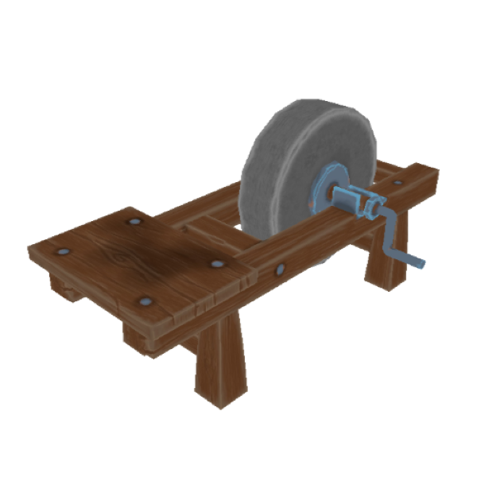
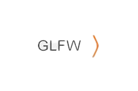

Een rendering-engine
voor het leren programmeren
van 3D-graphics

Waarom heb ik dit project gemaakt?
Ik wilde leren hoe game-engines zoals Unity en Unreal Engine
3D-graphics weergeven op het scherm van een computer
Wat heb ik geleerd?
Ik leerde de essentie van het renderen van objecten op het scherm, waarvoor drie belangrijke buffers nodig waren: de VAO (Vertex Array Object), VBO (Vertex Buffer Object) en EBO (Element Buffer Object).
Ik heb inzicht gekregen in het renderen van 3D-objecten, met behulp van 3D-wiskunde en de GLM-bibliotheek voor OpenGL. Daarnaast heb ik me gericht op het programmeren van shaders, het verkennen van fragment- en vertex-shaders in de OpenGL grafische pijplijn.
De technologieën die ik voor dit project heb gebruikt!
OpenGL
GLM Wiskunde biebliotheek
C++
